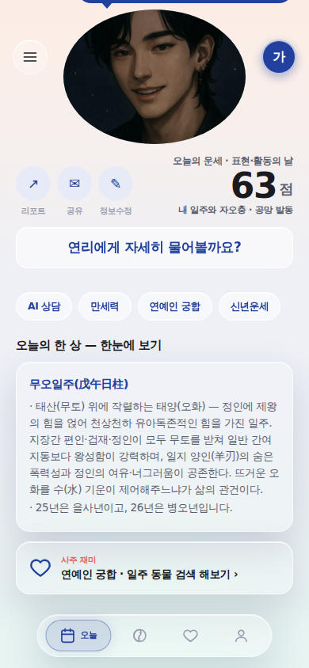
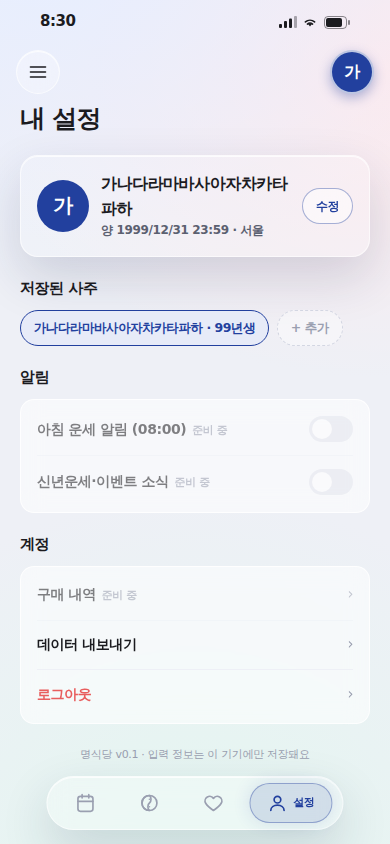

명식당 앱 UIUX 보완 청사진 v1
2026-07-25 17:20 KST 착수 · 지시 [Q. 30] "사주 앱 흐름 uiux가 완전 깨져있는데 어떻게 보완할지 청사진"
전 11화면 헤드리스 실렌더 + 픽셀 실측 — 코드 추정 0건. 아래 컷은 전부 실제 렌더 화면이다.
한 줄 진단
깨진 건 취향이 아니라 세 가지 구조다. ① 라이트 단일 테마로 바꿀 때 글자 보호막(스크림)이 고아가 된 회귀 ② 리포트 화면이 앱 껍데기 밖에 있어 생긴 막다른 흐름 ③ 화면마다 제각각 자란 컨트롤 문법 드리프트. ①②는 지금 바로 고칠 수 있고, ③은 게이트로 못을 박아야 재발이 멈춘다.
1. 눈으로 보는 붕괴

--stage-scrim이 transparent라 캐릭터 그림 위에 글자 65개가 맨몸으로 얹혔다. 검은 머리카락 위 회색 지장간·십이운성·신살은 거의 안 보인다. 게다가 이 얼굴은 아이샤(여성) — 홈·분석은 남신 셰프다.
flex-end 정렬의 구조적 결과 — 3줄이면 세그먼트까지 밀어붙인다.
rgba(255,255,255,.28)로 너무 투명해 뒤 본문("병오년의 환경 변화")이 그대로 읽힌다. 유리는 유지하되 불투명도가 모자란다.



› 1이 섞였다. 비활성 dim이 없어 다 눌러보게 된다. 8칸 중 7칸이 준비 중 = 탭 하나가 빈 방.실측 영수증 표
| # | 화면 | 실측값 | 판정 |
|---|---|---|---|
| A1 | /result | --stage-scrim = transparent · 플레이트 = aisha.png · 위 텍스트 65개 | 가독 붕괴 |
| A2 | 알약 네비 | rgba(255,255,255,.28) · blur 11px · 텍스트 투과 3건 | §3-c 위반 |
| A3 | 홈 히어로 | 월블록 y=155 / 이름 y=111(2줄) → 43px 침범 | 레이아웃 붕괴 |
| B1 | /result | MyeongShell 미사용 = 하단 네비 없음 · 이탈로 1개 | 막다른 길 |
| B2 | 네비 | 하단 탭 4 vs 드로어 5 — '내 원국'이 탭에 없음 | 문법 2중 |
| B3 | /result 진입 | 홈 서클 · 홈 칩 · 분석 CTA = 3경로 | 층위 불명 |
| B4 | 헤더 | 유틸=셸 고정 / 세그먼트=스크롤 소속 · 중앙Y 72 vs 74.5 | 레이어 분열 |
| B5 | 캐릭터 | 연리 · 남신 셰프 · 아이샤 = 이름 3 · 얼굴 2 | 정체성 분열 |
| C1 | 전역 | 문자 도형 ‹ ↗ ▼ × + 이모지 🐴 🎴 🍀 (🎴 = 빨간 사각형 렌더) | §2 위반 |
| C2 | /fun | 배지 3 + 셰브론 1 혼재 · dim 없음 | §5 위반 |
| C3 | 폼 | 로그인 = placeholder만 / 가입·입력 = 섹션 라벨 | 문법 2종 |
| C4 | /settings | 이름 중심Y 197 vs 수정 206 = 9px | [E8] 위반 |
| C5 | /settings | 저장칩 249 + 추가칩 66 = 315 / 가용 350 | 오버플로 임박 |
| C6 | /input | 마지막 섹션 클립 경계 아래 잘림 · 스크롤 힌트 0 | "끝"으로 오독 |
| C7 | 대운 레일 | 첫·마지막 반쪽 잘림("001"·"52") · 마스크 없음 | 잘린 인상 |
| C8 | /settings | --c-solar(양력 의미색)를 로그아웃 destructive로 재사용 | 의미축 충돌 |
A1이 왜 생겼나 — 청사진의 출발점
--stage-scrim은 260718에 "다크 스테이지 가독"으로 도입돼 다크 전용으로 값이 박혔다(라이트 = transparent). 그 뒤 260721에 다크 모드가 폐지되면서 라이트만 남았고 — 스크림은 영구히 투명이 됐다. 즉 고쳐놨던 것이 테마 축 변경으로 되살아난 회귀다. 지금 값만 바꿔 고치면 다음 축 변경에서 또 되살아난다. 그래서 파도 0과 함께 게이트(§3)가 반드시 동승해야 한다.
2. 보완 청사진 — 4파도
파도마다 커밋을 쪼개 git revert 한 줄로 되돌릴 수 있게 한다(방식론 §8). 전부 기존 토큰·부품 계승 — 새 색·새 값 창작 0.
파도 0을 먼저 하는 이유: 읽히지 않는 화면 위에서는 흐름 개선의 효과를 눈으로 검증할 수 없다. 파도 1이 결정 대기로 막혀도 파도 0·2는 독립 진행된다.
파도 0 가독 복구 — 사용자가 "깨졌다"고 느끼는 그것
| ID | 할 일 | 손댈 곳 |
|---|---|---|
| W0-1 | 스테이지 스크림을 라이트에도 부여 — 글자가 얹히는 구간만(전면 딤 금지: 캐릭터를 죽이지 않는다) | index.css · CharacterStage.tsx |
| W0-2 | 알약 네비·상단 유틸 유리를 "충분히 불투명 + 채도 차단"으로(§3-c) — blur는 유지 | MyeongShell.tsx |
| W0-3 | 홈 히어로 날짜·이름을 2줄 이상에서 안 깨지는 구조로 | Home.tsx 247–253 |
파도 1 흐름 봉합 — "흐름이 깨졌다"의 실체
| ID | 할 일 | 상태 |
|---|---|---|
| W1-1 | /result를 앱 셸에 편입 → 하단 네비 상주, 막다른 길 해소 | 즉시 가능 |
| W1-2 | 정보구조 단일화: 하단 탭 5개 확장 or 세그먼트 폐지 | D2 결정 |
| W1-3 | 분석 ↔ 결과 층위 정리: 1화면 통합 or 두 층 명시 명명 | D3 결정 |
| W1-4 | 헤더 3요소를 sticky 단일 행으로(같은 레이어) + 중앙Y 1px 이내 | 즉시 가능 |
| W1-5 | 캐릭터 정체성 단일화 — chefs.ts 레지스트리 단일 경유 | D1 결정 |
파도 2 문법 통일 — 누적 부채
- W2-1 문자 도형·이모지 →
PictSVG 레지스트리 편입 - W2-2 '준비 중' 단일 표준 부품(dim + 배지, 셰브론 제거)
- W2-3 폼 문법 = 섹션 라벨 축으로 통일
- W2-4 형제 중앙 정렬 실측 스윕(1px 기준)
- W2-5 최장 이름 오버플로 방어(max-width + 말줄임)
- W2-6 스크롤 경계 어포던스(하단 페이드·안전 패딩) — C6·C7 동시 해소
- W2-7 내부 라벨·의미축 정리(
solar를 destructive에서 분리)
⚠ [4-1] 준수: 소급 통일 캠페인이 아니다. 게이트에 등재된 축(토큰·색·공유 부품)만 강제하고, 나머지는 그 파일을 만질 때 곁들인다(touch-then-align).
파도 3 재방문 루프 — 브랜드 핵심
확정 태그라인은 「당신의 운명을 위해, 오늘도 한 상.」 = 매일 들르는 집인데, 지금 매일 올 이유는 '오늘 점수' 하나다.
- W3-1 일진 다이어리 기록 UI — 엔진
diaryDayInfo가 이미 배선돼 있어 코드측은 준비 완료 - W3-2
/fun= 8칸 중 7칸 '준비 중'인 빈 방 → 축소 또는 재편
3. 기계 게이트 — 청사진의 핵심
문장으로 막지 말고 게이트로 막는다([8] "훅이 문장보다 먼저 막는다"). 기존 npm run verify 6게이트에 렌더 기하 검사를 얹는다 — 스모크가 이미 실브라우저를 띄우고 있어 새 인프라 없이 증분으로 붙는다.
| ID | 게이트 | 무엇을 assert |
|---|---|---|
| G1 | 렌더 기하 회귀 | ① 글자가 얹히는 스테이지의 스크림 알파 > 0 ② 유리 크롬 뒤 텍스트 투과 0 ③ 형제 중앙Y 차 ≤ 1px ④ 대표데이터(최장명)에서 오버플로 0 ⑤ 스크롤 클립 경계 아래 잘린 컨트롤 0 |
| G2 | 글리프 | 소스에 문자 도형(‹ › ▶ ▼ ✓ ✎ ✉ ↗ □ ×)·이모지 0 |
| G3 | 정체성 | 캐릭터 이름·플레이트 참조가 chefs.ts 단일 경유(하드코딩 aisha.png 류 0) |
4. 운영자 결정 필요 — 파도 1 블로커
설명 대신 플레이그라운드로 시안을 나란히 놓고 고르게 한다([5]).
| ID | 갈림길 | 지금 상태 |
|---|---|---|
| D1 | 캐릭터 정체성 — 연리(주인장) · 아이샤 · 셰프단 기본캐(남신)의 관계 | Q.16 미확정 1건과 동일 축 — 이게 안 풀리면 W1-5 못 감 |
| D2 | 정보구조 — 하단 탭 5개로 확장 vs 홈 세그먼트 유지 | 탭 4 / 드로어 5 불일치 |
| D3 | 분석 ↔ 결과 — 1화면 통합 vs 2층 유지(명명 정리) | 같은 목적지 3경로 |
5. 이 청사진이 안 하는 것
- 코드를 안 고친다 — 청사진 = 계획. 파도 0은 GO 즉시 착수 가능한 상태로 명세만 확정.
- 새 색·새 값·새 컴포넌트를 창작하지 않는다 — 파도 전부 기존 토큰·부품 계승.
- D1~D3을 세션이 결정하지 않는다(3조1항 "디자인은 임의로 설계하는 게 아니다").